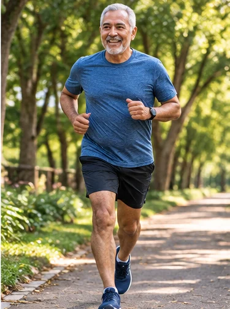
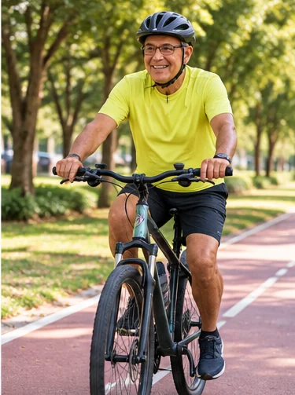
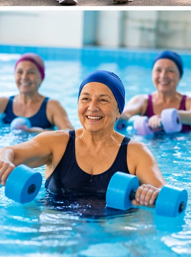
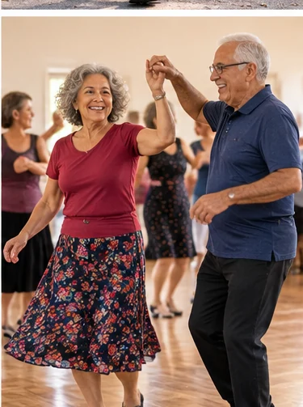

Caminhada
Gratuita e fácil de incluir na rotina.
Caminhar, dançar, passear com os animais e fazer movimentos em casa ajudam a cuidar da saúde. Comece no seu ritmo.
Ajuda a levantar da cadeira, caminhar e carregar compras.
Contribui para o controle de doenças crônicas.
Exercícios adequados ajudam a reduzir o risco de quedas.
Pode melhorar o sono, o humor e a convivência social.
Há muitas formas de praticar atividade física — não é preciso ir à academia.
Gratuita e fácil de incluir na rotina.

Para quem tem preparo e condição de praticar com segurança.

Escolha local seguro e evite animais que puxem a guia.

Em locais seguros e com equilíbrio adequado.

Movimento e resistência da água, com orientação.

Movimento, música e convivência.

Força e mobilidade com acompanhamento.

Movimentos confortáveis e adaptados.
Procure saber se existem grupos e atividades orientadas em equipamentos públicos ou comunitários da sua região.
Estas são ideias educativas, não uma receita de treino para todas as pessoas.
Trabalha os músculos das pernas. Use cadeira estável, sem rodinhas e com apoio adequado.
Movimenta e fortalece as panturrilhas. Faça com apoio firme.
Exercício adaptável para braços, ombros e peito; respeite seus limites.
Movimenta pernas e coordenação, com apoio quando necessário.
Segurança em primeiro lugar: quem apresenta desequilíbrio, quedas recentes ou limitações importantes deve buscar orientação antes de praticar movimentos que possam aumentar o risco de cair.
A força muscular importa para continuar fazendo o que você gosta.

Ilustração conceitual, sem idades específicas. Nem todas as pessoas apresentam essa evolução e a imagem não permite diagnóstico.
Com o passar dos anos, algumas pessoas perdem massa e força muscular. A sarcopenia é uma condição que envolve principalmente a redução da força; sua confirmação depende de avaliação da musculatura por profissionais de saúde.
Ela pode dificultar levantar da cadeira, subir escadas e caminhar com segurança, além de aumentar o risco de quedas.
Recomendações gerais para pessoas com 65 anos ou mais, adaptadas à capacidade de cada pessoa.